임상심리사-2급 (2018-08-19 기출문제)
1과목: 심리학개론
1. 처벌의 효과를 극대화하는 방안과 가장 거리가 먼 것은?
- 반응과 처벌 간의 지연간격이 짧아야 한다.
- 처벌과 강화는 상호의존적이어야 한다.
- 처벌은 약한 강도에서 시작하여 그 행동이 반복될수록 점차적으로 강해져야 한다.
- 처벌은 확실한 규칙에 근거해서 주어져야 한다.
(정답률: 83%)

2. 성격5요인에서 특질요인과 해당 요인을 잘 나타내는 척도가 틀리게 짝지어진 것은?
- 개방성 : 인습적인-창의적인, 보수적인-자유로운
- 성실성 : 부주의한-조심스러운, 믿을 수 없는-믿을 만한
- 외향성 : 위축된-사교적인, 무자비한-마음이 따뜻한
- 신경증 : 안정된-불안정한, 강인한-상처를 잘 입는
(정답률: 67%)
3. 변산성을 측정하는 기술치로 짝지어진 것은?
- 범위, 최빈치
- 범위, 표준편차
- 표준편차, 평균
- 중앙치, 편포도
(정답률: 60%)
4. 타인의 행동에 대한 원인 귀인 시 외부적인 요인을 과소평가하고 내부적인 요인을 과대평가하는 것은?
- 공정한 세상 가설
- 자아고양 편파
- 행위자-관찰자 편향
- 기본적 귀인 오류
(정답률: 70%)
5. Erikson의 발달이론에 대한 설명으로 틀린 것은?
- 기질의 차이가 성격발달에 중요하다.
- 사회성 발달을 강조한다.
- 전생애를 통해 발달한다.
- 성격은 각 단계에서 경험하는 위기의 극복양상에 따라 결정된다.
(정답률: 87%)
6. Adler가 인간의 성격을 설명하면서 강조한 것이 아닌 것은?
- 열등감의 보상
- 우월성 추구
- 힘에 대한 의지
- 신경증 욕구
(정답률: 85%)
7. 인지학습이론에 대한 설명으로 틀린 것은?
- 형태주의는 공간적인 관계보다는 시간변인에 주로 관심을 갖는다.
- Tolman은 강화가 무슨 행동을 하면 어떤 결과가 일어날 것이란 기대를 확인시켜 준다고 보았다.
- 통찰은 해결 전에서 해결로 갑자기 일어나며 대개 '아하' 경험을 하게 된다.
- 인지도는 학습에서 내적 표상이 중요함을 보여준다.
(정답률: 76%)
8. 기억 연구에서 집단이 회상한 수가 집단구성원 각각 회상한 수의 합보다 적은 것을 의미하는 것은?
- 책임감 분산
- 청크효과
- 스트룹효과
- 협력 억제
(정답률: 45%)
9. 인간의 성격을 공통 특질과 개별 특질로 구분한 학자는?
- Allport
- Cattell
- Eysenck
- Adler
(정답률: 62%)
10. 인지부조화 이론의 예로 적합하지 않은 것은?
- 지루한 일을 하고 천원 받은 사람이 만원 받은 사람보다 그 일이 더 재미있다고 생각한다.
- 열렬히 사랑한 애인과 헤어진 남자가 그 애인이 못생기고 성격도 나쁘다고 생각한다.
- 어떤 사람이 맛이 없는 빵을 10개나 먹고 난 후 자신이 배가 고팠었다고 생각한다.
- 문화에 대해 폐쇄적인 태도를 지닌 사람이 개방적인 발언을 한 후 개방적으로 변한다.
(정답률: 65%)
11. 비율척도에 해당하는 것은?
- 성별
- 길이
- 온도
- 석차
(정답률: 55%)
12. 단기기억의 특성이 아닌 것은?
- 정보의 용량이 매우 제한적이다.
- 작업기억(working memory)이라 불린다.
- 현재 의식하고 있는 정보를 의미한다.
- 거대한 도서관에 비유할 수 있다.
(정답률: 87%)
13. 고전적 조건형성이 효과적으로 학습되기 위한 조건은?
- 무조건자극과 조건자극이 시간적으로 근접해 있어야 한다.
- 고정비율강화계획을 통한 학습이 필요하다.
- 혐오조건 형성을 통한 학습을 해야 가능하다.
- 변동간격강화계획을 통해 학습을 해야 한다.
(정답률: 77%)
14. 비행기 여행에 두려움을 가지고 있는 환자의 경우, 정신분석적 입장에서 볼 때 이 두려움의 주된 원인으로 가정할 수 있는 것은?
- 두려운 느낌을 갖게 만드는 무의식적 갈등의 전이
- 어린 시절 사랑하는 부모에게 닥친 비행기 사고의 경험
- 비행기의 추락 등 비행기 관련 요소들의 통제 불가능성
- 자율신경계 등 생리적 활동의 이상
(정답률: 80%)
15. 양적인 종속변인과 독립변인이 다수일 때 변인들 간의 상호관계를 살펴보기 위한 통계기법은?
- 정준상관분석(canonical correlation analysis)
- 중다판별분석(multiple discriminant analysis)
- 중다변량분석(MANOVA)
- 중다상관분석(multiple correlation analysis)
(정답률: 41%)
16. 기억의 인출과정에 대한 설명으로 틀린 것은?
- 인출이 이후의 기억을 증가시킬 수 있다.
- 장기기억에서 한 항목을 인출한 것이 이후에 관련된 항목의 회상을 방해할 수 있다.
- 인출행위가 경험에서 기억하는 것을 변화시킬 수 있다.
- 기분과 내적상태는 인출단서가 될 수 없다.
(정답률: 80%)
17. Piaget 이론에서 영아가 새로운 정보에 비추어 자신의 도식을 수정하는 과정은?
- 조절
- 동화
- 대상영속성
- 자아중심성
(정답률: 80%)
18. 시험 기간 중에 영화를 보러가는 학생이 “더 공부한다고 해서 나아지는 게 없어”라고 스스로에게 얘기한다면, 이때 사용하는 방어기제는 무엇인가?
- 부인
- 억압
- 투사
- 합리화
(정답률: 87%)
19. 연구에서 독립변인 이외의 영향력 있는 변인으로 연구결과에 유의미한 영향을 미치는 것은?
- 관찰변인
- 무선변인
- 요구특성변인
- 가외변인
(정답률: 80%)
20. 원점수 25(평균=20, 표준편차=4)를 Z점수로 변환시킨 값은?
- +1.25
- -1.25
- -5
- +5
(정답률: 78%)
2과목: 이상심리학
21. 조현병 스펙트럼 및 기타 정신병적 장애에 속하는 장애를 모두 고른 것은?
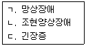
- ㄱ, ㄴ
- ㄱ, ㄷ
- ㄴ, ㄷ
- ㄱ, ㄴ, ㄷ
(정답률: 49%)
22. DSM-5의 진단 분류에 따른 성격장애 중 기이하고 괴팍한 행동 특성과 가장 거리가 먼 것은?
- 편집성 성격장애
- 조현성 성격장애
- 조현형 성격장애
- 회피성 성격장애
(정답률: 84%)
23. 정신장애와 그에 관한 설명으로 옳지 않은 것은?
- 신경성 폭식증-체중 증가에 대한 두려움을 가짐
- ADHD-치료에 주로 사용되는 약물은 중추신경 자극제임
- 학습장애-지능수준에 관계없이 학업성적이 현저하게 떨어지는 경우를 말함
- 뚜렛장애-여러 가지 운동 틱과 한 가지 또는 그 이상의 음성 틱이 일정 기간 동안 나타남
(정답률: 51%)
24. 조현병의 원인에 대한 설명으로 옳지 않은 것은?
- 이중구속 이론 : 부모의 상반된 의사전달이 조현병 유발에 영향을 준다.
- 표현된 정서(expressed emotion) : 가족 간 긍정적인 감정을 과하게 표현한다.
- 도파민 가설 : 뇌에서 도파민 수용기가 증가되어 있다.
- 정신분석이론 : 조현병을 자아경계(ego boundary)의 붕괴에 기인한 것으로 본다.
(정답률: 83%)
25. 치매에 대한 설명으로 옳지 않은 것은?
- 노인성 치매는 초발 연령 65세 이상에서 발생할 때를 일컫는 말이다.
- 사회적, 직업적 기능을 방해할 정도로 인지 기능이 점차 퇴화된다.
- 우울장애를 배제하려면 치매 증상이 아침에 더욱 심하게 나타나야 한다.
- 작화증(confabulation)은 대표적인 증상이다.
(정답률: 75%)
26. 범불안장애의 DSM-5 진단기준에 해당하지 않는 것은?
- 걱정의 초점이 주로 과거 자신의 잘못에 맞추어짐
- 장애가 물질의 생리적 효과나 다른 의학적 상태로 인한 것이 아님
- 걱정을 통제하기 어려움
- 불안과 걱정이 당사자에게 심각한 고통을 유발함
(정답률: 84%)
27. 자기애성 성격장애에 관한 이론과 그 설명을 잘못 연결한 것은?
- 대상관계이론-부모가 학대한 경우 위험성이 높다.
- 정신역동-타인이 자신에게 매우 도움이 된다고 믿는다.
- 인지 행동이론-아동기에 지나치게 긍정적으로 대우받은 사람들에게서 발생한다.
- 사회문화이론-경쟁이 조장되는 서구사회에서 나타날 소지가 크다.
(정답률: 61%)
28. 우울 유발적 귀인방식이 아닌 것은?
- 실패경험에 대한 전반적 귀인
- 실패경험에 대한 내부적 귀인
- 실패경험에 대한 안정적 귀인
- 실패경험에 대한 특정적 귀인
(정답률: 67%)
29. 다음 설명 중 옳은 것은?
- 여성은 남성에 비해 알코올 분해 효소가 부족하다.
- 알코올은 정적 강화물로 작용할 수 있지만, 부적 강화물은 될 수 없다.
- 술을 마셨을 때 얼굴이 신속하게 붉어지는 것은 알코올 분해 효소가 많다는 증거이다.
- 술이 주로 식사와 함께 제공되는 문화에서는 알코올 문제가 많이 발생한다.
(정답률: 58%)
30. A양은 음대 입학시험을 앞두고 목소리가 나오지 않는 증상(aphonia)이 나타났다. 가장 가능성이 높은 정신장애 진단은?
- 강박장애(obsessive-compulsive disorder)
- 선택적 함묵증(selective mutism)
- 전환장애(conversion disorder)
- 특정공포증(specific phobia)
(정답률: 76%)
31. 남성이 사정에 어려움을 겪으며 성적 절정감을 느끼지 못하는 성기능 장애는?
- 조루증
- 지루증
- 발기장애
- 성교 통증장애
(정답률: 79%)
32. 다음 중 조증 증상일 가능성이 가장 높은 경우는?
- 로또가 당첨될 것 같아서 오늘 자동차를 카드로 결제했고, 내일은 집을 계약할 예정이다.
- 지난 1년 동안 사람들과 부딪히는 것이 싫어서 낮에는 집에 있다가 밤에만 돌아다녔다.
- 지능이 상위 0.01%에 속한다는 심리검사결과를 받고 멘사에 등록을 신청했다.
- 연인이 다른 사람과 결혼한 것이 화가 나서 방송국을 폭파하겠다고 위협하는 전화를 했다.
(정답률: 84%)
33. 품행장애에 관한 설명으로 옳은 것은?
- 적대적 반항장애는 품행장애로 발전하지 않는다.
- 품행장애의 유병률은 남녀의 차이가 없다.
- 품행장애의 발병에는 환경적 요인보다 유전적 요인이 크다
- 품행장애가 이른 나이에 발병할수록 예후가 좋지 않다.
(정답률: 76%)
34. 의존성 성격장애의 진단기준에 해당하지 않는 것은?
- 자신이 사회적으로 무능하고 열등하다고 생각한다.
- 자신의 일을 혼자서 시작하거나 수행하기가 어렵다.
- 타인의 보살핌과 지지를 얻기 위해 무슨 행동이든 한다.
- 타인의 충고와 보장이 없이는 일상적인 일도 결정을 내리지 못한다.
(정답률: 63%)
35. 우울장애에 관한 설명으로 가장 거리가 먼 것은?
- 쌍생아 연구는 우울증의 유전적 소인의 증거를 제시한다.
- 세로토닌의 낮은 활동은 우울과 관련이 있다.
- 면역체계의 조절장애가 우울의 유발을 돕는 것으로 나타났다.
- 우울증과 관련된 뇌회로는 밝혀진 것이 없다.
(정답률: 77%)
36. 강한 공포, 곧 죽지 않을까하는 불안, 심계항진, 호흡곤란, 감각이상 등과 같은 문제들이 순식간에 시작되어 10여분 내에 절정에 달하는 증상을 특징으로 하는 장애는?
- 신체증상장애
- 공황장애
- 질병불안장애
- 범불안장애
(정답률: 87%)
37. DSM-5 특정학습장애의 감별진단과 가장 거리가 먼 것은?
- 신경학적 또는 감각 장애로 인한 학습문제
- 지적장애
- 신경인지장애
- 우울장애
(정답률: 70%)
38. 이상행동 및 정신장애의 판별기준과 가장 거리가 먼 것은?
- 적응적 기능의 저하 및 손상
- 주관적 불편감과 개인의 고통
- 가족의 불편감과 고통
- 통계적 규준의 일탈
(정답률: 85%)
39. 알츠하이머병의 유전적 원인에 관한 설명으로 옳지 않은 것은?
- 단백질 생산을 맡은 유전자의 돌연변이와 관련이 있다.
- 만발성 알츠하이머병과 조발성 알츠하이머병에 관련된 유전적 요인은 다르다.
- 노인성 반점과 같은 구조적 변화가 관찰된다.
- 신경섬유매듭이 정상발달 노인에 비해 매우 적다.
(정답률: 53%)
40. 섭식장애에 관한 설명으로 옳지 않은 것은?
- 신체기능의 저하를 가져와 죽음에까지 이를 수 있다.
- 마른 외형을 선호하는 사회문화적 분위기와 관련된다.
- 대개 20대 중반에 처음 발병된다.
- 외모가 중시되는 직업군에서 발병률이 높다.
(정답률: 84%)
3과목: 심리검사
41. MMPI-2의 타당도척도 점수 중 과잉보고(over reporting)로 해석 가능한 경우는?
- VRIN 80점, K 72점
- TRIN(f방향) 82점, FBS 35점
- F 75점, F(P) 80점
- F(B) 52점, K 52점
(정답률: 64%)
42. Wechsler 지능검사 결과해석에 대한 설명으로 옳지 않은 것은?
- 전체지능지수는 수검자의 지적능력에 대한 대표점수로서의 의미를 가진다.
- 검사 결과지에서는 지표점수들 간의 차이가 통계적으로 유의할 시 그에 대한 기저율과 차이확률이 제공된다.
- 보충 소검사는 지능에 영향을 미치는 성격적 측면을 분명히 해 주기 때문에 모두 실시하는 것이 좋다.
- 과정점수(처리점수)는 문제해결 과정에서의 인지적 과정에 대한 구체적 정보를 나타낼 수 있다.
(정답률: 78%)
43. 지능에 관한 설명으로 옳지 않은 것은?
- 지능은 학업성적과 관련이 있다.
- 지능발달은 성격과 관련이 없다.
- 지능은 가정의 양육행동과 관련이 있다.
- 일반적인 지능에 있어서 남녀의 성차가 없다.
(정답률: 70%)
44. 일반적으로 정신장애의 진단을 목적으로 하는 심리검사는?
- CPI
- MMPI
- MBTI
- 16PF
(정답률: 81%)
45. 다음 중 노인 집단의 일상생활 기능에 대한 양상 및 수준을 평가하기에 가장 적합한 심리검사는?
- MMPI-2
- K-VMI-6
- K-WAIS-IV
- K-Vineland-II
(정답률: 60%)
46. MMPI 제작 방식에 대한 설명으로 옳은 것은?
- 정신병리 이론을 바탕으로 하여 제작되었다.
- 합리적 방식과 이론적 방식을 결합한 방식으로 제작되었다.
- 정신장애군과 정상군을 변별하는 통계적 결과에 따라 경험적 방식으로 제작되었다.
- 인성과 정신병리와의 상관성에 대한 선행연구 결과들을 바탕으로 하여 제작되었다.
(정답률: 68%)
47. MMPI에서 검사의 신뢰성과 타당성을 높이기 위한 통계적 조작으로 K 원점수 교정을 하는 임상 척도는?
- L 척도
- D 척도
- Si 척도
- Pt 척도
(정답률: 53%)
48. 검사자가 지켜야 할 윤리적 의무로 옳지 않은 것은?
- 검사과정에서 피검자에게 얻은 정보에 대해 비밀을 보장할 의무가 있다.
- 자신이 다루기 곤란한 어려움이 있을 때는 적절한 전문가에게 의뢰하여야 한다.
- 자신이 받은 학문적인 훈련이나 지도받은 경험의 범위를 벗어난 평가를 해서는 안 된다.
- 피검자가 자해행위를 할 위험성이 있어도 비밀보장의 의무를 지켜야 하므로 누구에게도 알려서는 안 된다.
(정답률: 81%)
49. 23개월 유아가 월령에 비해 체격이 작고 아직도 걷는 것이 안정적이지 않으며, 말할 수 있는 단어가 "엄마, 아빠"로 제한되었다는 문제로 내원하였다. 다음 중 이 유아에게 실시할 수 있는 검사로 적합한 것은?
- 그림지능검사
- 덴버 발달검사
- 유아용 지능검사
- 삐아제식 지능검사
(정답률: 75%)
50. Kaufman과 Lichtenberger가 제시한 정보처리과정 모형에 해당되지 않는 것은?
- 입력
- 군집
- 저장
- 산출
(정답률: 77%)
51. 지능이 높은 사람은 모든 영역에서 우수하다는 종래의 일반적인 지능 개념에 이의를 제기하고 인간의 지적 능력은 서로 독립적인 여러 유형의 능력으로 구성되어 있다고 주장한 학자는?
- Binet
- Gardner
- Wechsler
- Kaufinan
(정답률: 59%)
52. 말의 유창성이 떨어지고 더듬거리는 말투, 말을 길게 하지 못하고 어조나 발음이 이상한 현상 등을 보이는 실어증은?
- 브로카 실어증
- 전도성 실어증
- 초피질성 감각 실어증
- 베르니케 실어증
(정답률: 68%)
53. K-WAIS-IV의 보충소검사가 아닌 것은?
- 이해
- 순서화
- 동형 찾기
- 빠진 곳 찾기
(정답률: 59%)
54. MMPI의 세 타당도 척도(L, F, K) 점수를 연결한 모양이 부적(-) 기울기를 보일 때 가능한 해석은?
- 정교한 방어
- 방어능력의 손상
- 순박하지만 개방적인 태도
- 개방적이지 못한 심리적 태세
(정답률: 47%)
55. 표준화 검사의 개발 과정으로 옳은 것은?
- 검사목적 구체화 → 측정방법 검토 → 예비검사 시행 → 문항수정 → 본검사 제작 → 검사문항 분석 → 검사사용 설명서 제작
- 측정방법 검토 → 검사목적 구체화 → 예비검사 시행 → 문항수정 → 검사문항 분석 → 본검사 제작 → 검사사용 설명서 제작
- 검사목적 구체화 → 예비검사 시행 → 측정방법 검토 → 본검사 제작 → 문항수정 → 검사문항 분석 → 검사사용 설명서 제작
- 측정방법 검토 → 검사목적 구체화 → 예비검사 시행 → 검사문항 분석 → 문항수정 →→ 본검사 제작 → 검사사용 설명서 제작
(정답률: 67%)
56. K-Vineland-II에 대 한 설명 으로 틀린 것은?
- 개인의 발달 수준을 평가할 수 있다.
- 중학교 이상의 청소년들에게는 사용하기 어렵다는 단점이 있다.
- 피검자의 가족이나 여타 피검자를 잘 알고 있는 사람과의 면담을 통해 실시할 수 있다.
- 언어적 능력이 제한되어 있는 아동의 지능수준을 유추할 수 있는 자료가 될 수 있다.
(정답률: 65%)
57. Wechsler 지능검사 결과가 다음과 같을 때 그 해석으로 적절하지 않은 것은?
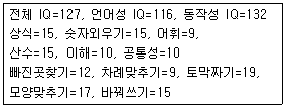
- 주의집중의 문제가 의심된다.
- 시지각 능력의 발달이 우수하다.
- 전반적으로 지적 능력 발달이 불균형하다.
- 언어 및 사회성 발달이 다른 지적능력에 비해 상대적으로 저조하다.
(정답률: 49%)
58. 신경심리검사의 용도에 관한 설명으로 옳지 않은 것은?
- 기질적 장애와 기능적 장애 간의 감별진단에 유용하다.
- 재활과 치료평가 및 연구에 유용하다.
- CT나 MRI와 같은 뇌영상기법에서 이상 소견이 나타나지 않을 때 유용할 수 있다.
- 기능적 장애의 원인을 판단하는데 도움이 된다.
(정답률: 58%)
59. 다음 중 구성능력(constructional ability)을 평가하는 데 적절한 신경심리검사는?
- Boston 실어증검사
- 위스콘신 카드검사
- 추적검사(Trail Making Test)
- Rey 복합도형검사(Complex Figure Test)
(정답률: 65%)
60. K-WAIS-IV의 지수에 속하지 않는 것은?
- 처리속도 지수
- 지각추론 지수
- 작업기억 지수
- 운동협응 지수
(정답률: 80%)
4과목: 임상심리학
61. 초기 임상심리학자와 그의 활동으로 바르게 짝지어진 것은?
- Witmer - g지능 개념을 제시했다.
- Binet - Army Alpha 검사를 개발했다.
- Spearman - 정신지체아 특수학교에서 심리학자로 활동했다.
- Wechsler - 지능검사를 개발했다.
(정답률: 78%)
62. 내담자를 평가할 때 문제행동의 선행조건, 환경적 유인가, 보상의 대체원, 귀인방식과 같은 요소를 중요하게 여기는 평가방법은?
- 기술지향적 평가
- 인지행동적 평가
- 정신역동적 평가
- 다축분류체계 평가
(정답률: 74%)
63. 다음에 해당하는 강화계획으로 옳은 것은?
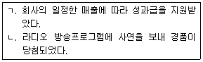
- ㄱ: 고정비율, ㄴ: 고정간격
- ㄱ: 고정간격, ㄴ: 변동비율
- ㄱ: 고정비율, ㄴ: 변동간격
- ㄱ: 변동비율, ㄴ: 고정비율
(정답률: 65%)
64. 관상동맥성 심장병과 관련 깊은 성격유형에 대비되는 성격으로 스트레스에 유연하게 반응하고 느긋함이 강조되는 성격유형은?
- Type A
- Type B
- Introversion
- Extraversion
(정답률: 66%)
65. 행동평가에서 중요시 하는 기능분석(functional analysis)이 아닌 것은?
- 선행조건(antecedent)
- 문제행동(behavior)
- 문제인식(cognition)
- 결과(consequence)
(정답률: 67%)
66. 임상건강심리학에서 주로 관심을 갖는 영역으로 가장 거리가 먼 것은?
- 주의력 결핍 과잉행동 장애
- 비만
- 흡연
- 스트레스 관리
(정답률: 71%)
67. 내담자중심 치료에서 치료자의 주요 기능과 가장 거리가 먼 것은?
- 자유로운 분위기를 제공하는 것
- 내담자 자신과 주변 세계에 대해 스스로의 지각을 높이게 하는 것
- 충고, 제안, 해석 등을 제공하는 것
- 내담자가 자신에 대해 더 많이 말할 수 있도록 하는 반응들을 나타내 보이는 것
(정답률: 76%)
68. 임상심리학자로서의 책임과 능력에 있어서 바람직하지 못한 것은?
- 서비스를 제공할 때 높은 기준을 유지한다.
- 자신의 활동결과에 대해 책임을 진다.
- 자신의 능력과 기술의 한계를 알고 있어야 한다.
- 자신만의 경험을 기준으로 내담자를 대한다.
(정답률: 82%)
69. 치료자가 환자에게 자신의 욕구, 소망 및 역동을 투사함으로써 환자의 전이에 반응하는 것은?
- 전이
- 전치
- 역할전이
- 역전이
(정답률: 82%)
70. Beck의 우울증 인지행동치료에서 인지적 삼제(cognitive triad)로 틀린 것은?
- 자신
- 과거
- 세계
- 미래
(정답률: 74%)
71. 다음에서 보여주는 철수엄마의 행동을 가장 잘 설명한 것은?
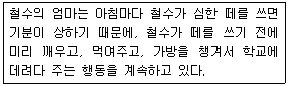
- 정적강화
- 처벌
- 행동조형
- 회피조건형성
(정답률: 67%)
72. MMPI를 해석하는 방법을 바르게 나열한 것은?
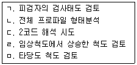
- ㄱ → ㄹ → ㄷ → ㄴ → ㅁ
- ㄱ → ㄴ → ㄷ → ㄹ → ㅁ
- ㄱ → ㅁ → ㄹ → ㄷ → ㄴ
- ㄱ → ㄴ → ㅁ → ㄹ → ㄷ
(정답률: 58%)
73. 다음 중 면접질문의 유형과 예로 잘못 짝지어진 것은?
- 개방형: 당신은 그 상황에서 분노를 경험했나요?
- 촉진형: 조금만 더 자세히 말씀해 주시겠습니까?
- 직면형: 이전에 당신은 이렇게 말했는데요.
- 명료형: 당신이 그렇게 느꼈다는 말인가요?
(정답률: 79%)
74. 집단치료의 치료요소에 대한 설명으로 옳은 것은?
- 보편성: 다른 사람들도 자신과 비슷한 문제와 걱정을 가지고 있다는 것을 알게 된다.
- 희망고취: 집단 구성원들은 치료자와 다른 구성원들로부터 충고를 받을 수 있다.
- 카타르시스: 집단 구성원들은 집단 수용을 통해 자기존중감을 중대시킨다.
- 이타성: 집단 구성원들은 다른 구성원들로 부터 배울 수 있다.
(정답률: 74%)
75. 다음은 어느 항목의 윤리적 원칙에 위배되는가?
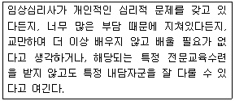
- 유능성
- 성실성
- 권리의 존엄성
- 사회적 책임
(정답률: 60%)
76. 행동평가방법 중 흡연자의 흡연 개수, 비만자의 음식섭취 등을 알아보는 데 가장 적합한 방법은?
- 자기감찰
- 행동관찰
- 참여관찰
- 평정척도
(정답률: 64%)
77. 다음은 어떤 원리에 따른 치료 방법인가?
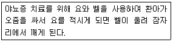
- 사회학습이론
- 고전적 조건화
- 조작적 조건화
- 인지행동적 접근
(정답률: 62%)
78. 다음에 해당하는 심리적 현상은?
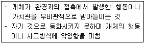
- 투사
- 융합
- 내사
- 편향
(정답률: 64%)
79. 지역사회 정신건강 센터에서 접수면접을 가장 잘 수행하는 방법에 대해 자문을 받았다면 어떤 유형의 자문인가?
- 내담자 중심 사례 자문
- 프로그램 중심 행정 자문
- 피자문자 중심 사례 자문
- 피자문자 중심 행정 자문
(정답률: 51%)
80. 세계 제1차 대전과 제2차 대전 사이에 임상심리학의 발전사에 대한 내용으로 틀린 것은?
- 많은 심리 평가 도구들이 개발되었다.
- 치료 영역에서 심리학자들의 역할이 중대되었다.
- 정신건강분야 내 직업적 갈등으로 임상심리학자들은 미국의 APA를 탈퇴해서 미국 응용심리학회를 결성했다.
- 미국 임상심리학의 박사급 자격전문화가 이루어졌다.
(정답률: 53%)
5과목: 심리상담
81. 성피해자에 대한 심리상담 시 치료관계를 형성하는 기법으로 적합하지 않은 것은?
- 치료과정에 대한 확실한 안내
- 내담자에게 선택권 주기
- 내담자의 사실 부정을 거부하기
- 치료자에 대한 개인적인 감정 묻기
(정답률: 71%)
82. 가족치료 관점에서 내담자의 증상에 관한 설명으로 옳은 것은?
- 가족체계나 관계 및 의사소통 양식을 반영한다.
- 개인의 심리적 갈등에서 유발된다.
- 증상을 유발하는 분명하고도 단일한 원인이 있다.
- 개인의 잘못된 신념이나 기술부족에서 비롯된다.
(정답률: 74%)
83. 학교에서의 위기상담의 주목적으로 옳지 않은 것은?
- 위기가 삶의 정상적인 일부라는 것을 깨닫게 하기
- 갑작스런 사건과 현재 상황에 대한 다른 조망을 획득하기
- 위기와 연관된 감정을 깨닫고 수용하기
- 자신의 문제해결 기술을 반복하여 연습하기
(정답률: 57%)
84. 현실치료의 인간관으로 가장 적합한 것은?
- 인간의 행동은 유전과 환경의 상호작용에 의해 형성된다.
- 인간의 삶은 목표에 도달하기 위한 개인의 자유로운 능동적 선택의 결과이다.
- 인간은 자신의 자유로운 선택에 의해 잠재력을 각성할 수 있는 존재이다.
- 인간은 기본적으로 자유롭고 자신의 목표를 스스로 선택하고자 하는 욕구를 가진 존재이다.
(정답률: 65%)
85. 집단상담의 후기 과정에서 일어날 수 있는 구성원의 문제에 해당하는 것은?
- 내담자가 말을 너무 많이 해서 집단 과정을 방해한다.
- 내담자가 강도 높은 자기 개방으로 인한 불안으로 철수한다.
- 내담자가 질문과 잡다한 충고 등을 해서 집단 과정을 방해한다.
- 내담자가 집단을 독점하고 자신만 주목받기를 원한다.
(정답률: 60%)
86. 다음은 인지상담의 기술 중 무엇에 대한 설명인가?
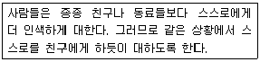
- 주의 환기하기
- 이중잣대방법
- 장점과 단점
- 다른 설명 찾기
(정답률: 73%)
87. 다음과 같이 아동의 학습문제를 알아보기 위한 방법은?
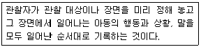
- 표본기록법
- 일화기록법
- 사건표집법
- 시각표집법
(정답률: 51%)
88. 알코올중독 치료에 관한 설명으로 옳은 것은?
- 행동치료가 단독으로 시행되는 경우가 생물학적 혹은 인지적 접근법과 결합하여 시행될 때 보다 효과적이다.
- 정신역동적 관점에서는 의존욕구와 관련된 갈등이 알코올중독을 일으키는 중요한 요인이라고 간주한다.
- 생리적 금단증상이 나타나는 경우 메타돈 유지프로그램을 적용하는 것이 권장된다.
- 알코올중독에 대한 심리치료에서 치료 초기에 무의식적 사고와 감정에 대한 해석을 자주 사용하는 것이 권장된다.
(정답률: 58%)
89. 진로상담에서 진로 미결정 내담자를 위한 개입방법과 비교하여 우유부단한 내담자에 대한 개입 방법이 갖는 특징이 아닌 것은?
- 장기적인 계획 하에 상담해야 한다.
- 대인관계나 가족 문제에 대한 개입이 필요하다.
- 정보 제공이나 진로 선택에 관한 문제를 명료화하는 개입이 효과적이다.
- 문제의 기저에 있는 역동을 이해하고 감정을 반영하는 것이 효과적이다.
(정답률: 48%)
90. 통합적 상담모형의 기본 개념에 해당하지 않는 것은?
- 내담자와의 동반자 관계를 형성한다.
- 일상의 상황들에서 성공적으로 대처하기 위해서 재사회화 과정을 거친다.
- 내담자의 인지보다는 행동에 초점을 둔다.
- 독특한 내담자에게 최상의 상담기법이 무엇인지 찾는다.
(정답률: 77%)
91. 다음과 같이 시험불안 원인을 설명하는 이론적 접근은?
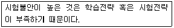
- 인지적 간섭 모델 접근
- 행동주의적 접근
- 욕구이론 접근
- 인지적 결핍 모델 접근
(정답률: 58%)
92. 생애별 발달과업을 제시함으로써 상담자에게 전체적인 상담프로그램을 평가하는 기준을 제시해 준 것은?
- Erikson의 공헌
- Piaget의 공헌
- Havighurst 의 공헌
- Gesell 아동발달연구소의 공헌
(정답률: 42%)
93. 청소년 비행의 원인에 관한 설명으로 옳지 않은 것은?
- 생물학적 접근: 매우 심각한 비행청소년 집단에서 측두엽 간질이 유의미하게 발견되기 도 한다.
- 사회학습이론: 청소년의 역할 모형이 바람직하지 못한 반사회적 행동이었을 경우에는 그 행동 패턴이 비행적으로 나타나게 된다.
- 문화전달이론: 빈민가나 우범지대와 같은 사회해체 지역에서 성장하는 청소년은 각종 비행을 배우고 또 직접 행동으로 실행하기도 한다.
- 아노미이론: 비행행동도 개인과 사회간 상호 행위 과정의 산물로 이해한다.
(정답률: 61%)
94. 신체적 장애 발생 시 흔히 나타나는 심리적 적응단계에 대한 설명으로 틀린 것은?
- 초기에 외상 자체에 대한 부정 여부는 회복효과와 관련이 없는 것으로 나타난다.
- 장애나 질병의 심각성과 정도를 이해하고 완전히 인정하게 될 때에는 우울해진다.
- 독립적으로 자기간호와 재활의 노력이 가능할 때 나타나는 반작용이 독립에 대한 저항이다.
- 충격은 외상 시 나타나는 즉각적인 반응이다.
(정답률: 54%)
95. 만성 정신장애 환자를 위한 정신재활치료에서 사례관리의 목적으로 가장 적합한 것은?
- 독립적인 사회생활을 할 수 있는 다양한 주거공간 확보
- 환자에게 필요한 다양한 서비스의 조정‧통합
- 위기상황에서 환자에게 안정화 전략 제공
- 효율적인 대인관계 증진 지원
(정답률: 70%)
96. 다음에 해당하는 방어 기제는?
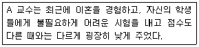
- 퇴행(regression)
- 전치(displacement)
- 투사(projection)
- 반동형성(reaction formation)
(정답률: 60%)
97. 인간중심 상담에 대한 설명으로 옳은 것은?
- 상담관계보다는 기법을 중시하는 특성을 가지고 있다.
- 내담자의 무의식적 측면도 충분히 반영하여 상담을 진행한다.
- 기본원리를 “만일 ~라면 ~이다”라는 형태로 표현할 수 있다.
- 상담은 내담자가 아닌 상담자가 이끌어가는 과정이다.
(정답률: 53%)
98. 노인을 대상으로 한 심리치료에서 고려해야 할 사항으로 적합하지 않은 것은?
- 보다 현실적이고 구체적인 사안에 초점을 맞추는 것이 좋다.
- 심층치료보다는 지지적인 치료가 더 적합하다.
- 가급적 가족의 참여를 배제하고 개인 상담을 활용해야 한다.
- 치료적 의존성을 주의해야 하며, 자조적이고 자립적인 행동을 격려하고 강화할 필요가 있다.
(정답률: 75%)
99. 청소년 상담자에게 요구되는 윤리적인 내용과 가장 거리가 먼 것은?
- 비밀보장에 대한 원칙을 내담자에게 알려준다.
- 청소년 내담자의 법적, 제도적 권리에 대해 알려준다.
- 청소년 내담자에게 존중의 의미에서 경어를 사용할 수 있다.
- 비밀보장을 위하여 내담자에 대한 기록물은 상담의 종결과 함께 폐기한다.
(정답률: 78%)
100. 도박중독의 심리‧사회적 특징에 대한 설명으로 옳은 것은?
- 도박 중독자들은 대체로 도박에만 집착할 뿐 다른 개인적인 문제를 가지지 않는다.
- 도박 중독자들은 직장에서 도박 자금을 마련하기 위해 남보다 더 열심히 노력한다.
- 심리적 특징으로 단기적인 만족을 추구하기 보다는 장기적인 만족을 추구한다.
- 도박행동에 문제가 있음을 인정하지 않고 변명하려 든다.
(정답률: 80%)